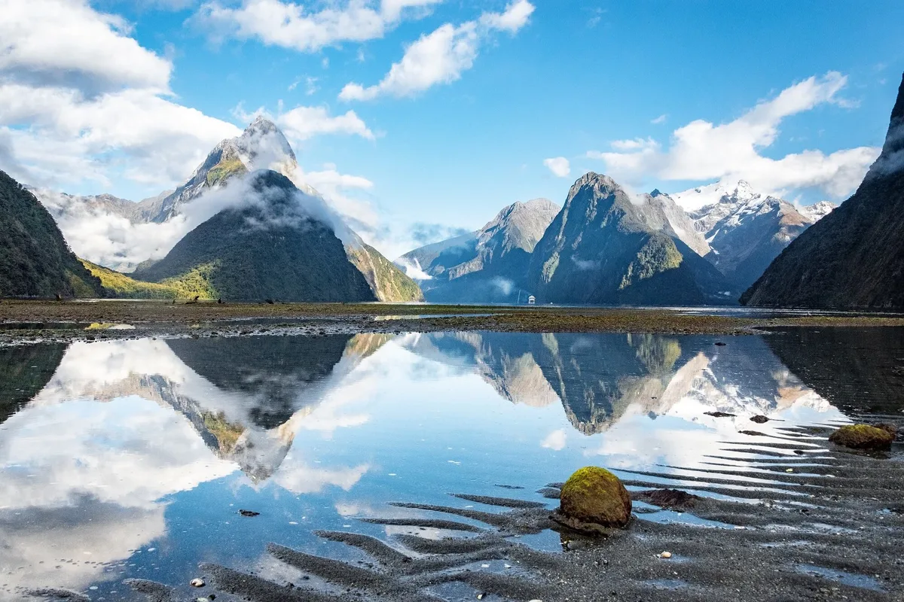
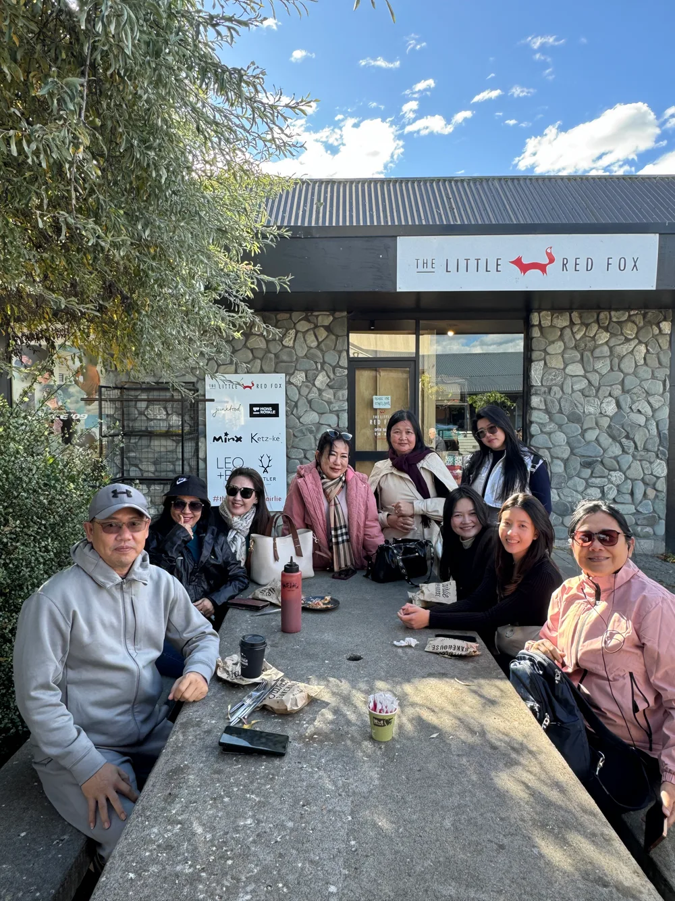
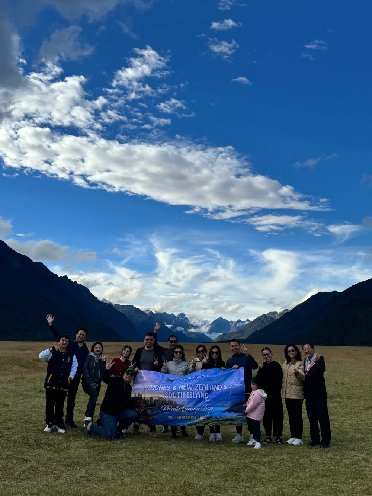
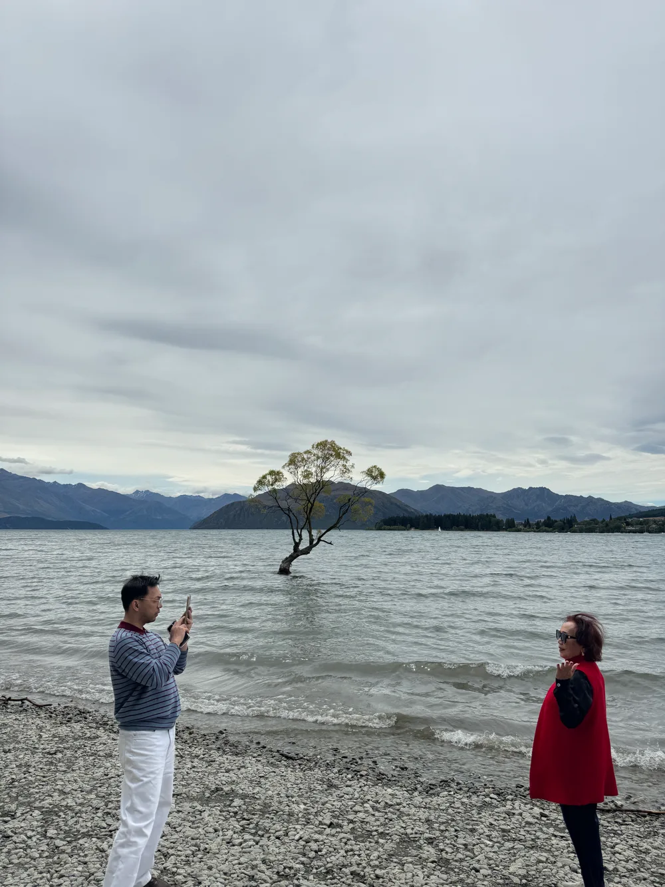
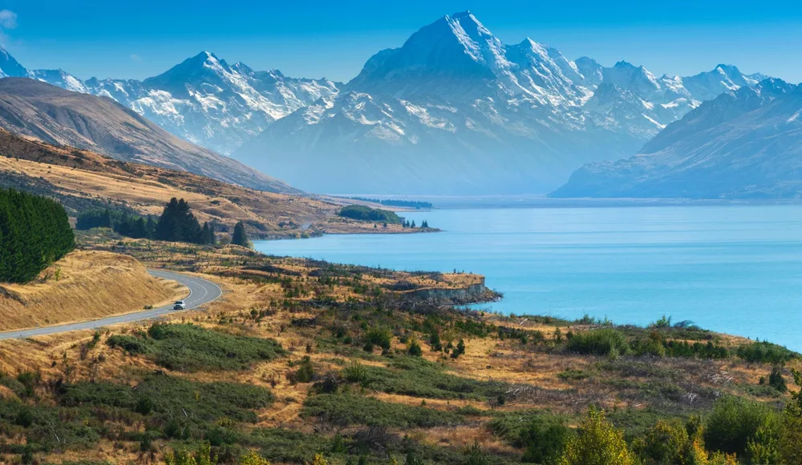
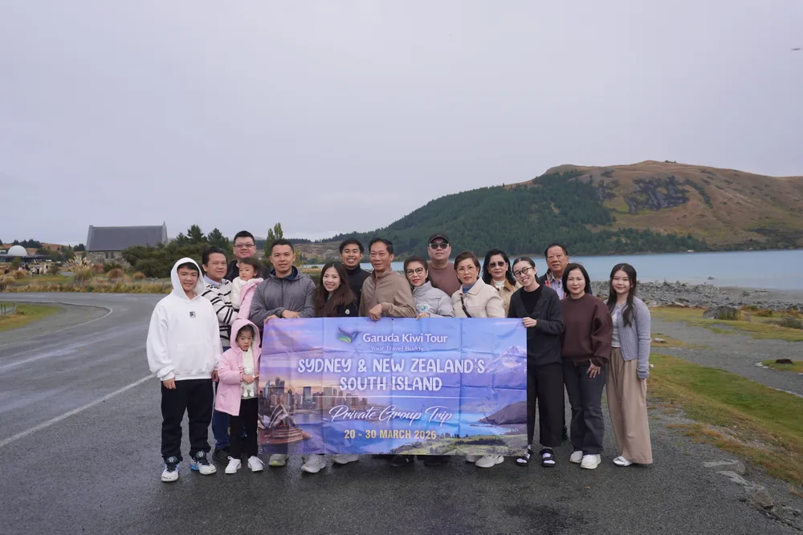

A smaller circle.
Grup yang lebih kecil memberi ruang untuk percakapan, kebersamaan, dan perhatian yang lebih personal selama tour.
Small groupConsidered journeys. New Zealand.
Perjalanan yang lebih personal,
bukan sekadar itinerary.
Small group. Local experience. Thoughtfully arranged.
01 / Aoraki / Mount Cook South Island, New Zealand
A closer look01 / Featured Journey
A thoughtfully arranged departure
Late autumn, thoughtfully explored
17–24 May 2027
Danau alpine, jalan pegunungan, dan fjord. South Island di akhir musim gugur, dinikmati bersama grup kecil dengan perjalanan yang diatur secara personal.
Late autumn membawa udara yang lebih sejuk dan hari yang lebih pendek. Warna dedaunan berbeda di setiap lokasi dan bergantung pada cuaca; tidak semua tempat masih memiliki autumn foliage pada akhir Mei.
Rp30.500.000/pax
Normal price Rp31.000.000/pax
Reservation PaymentRp3.000.000/pax
Payment schemeUp to 5x
Diskusikan detail reservasi dan jadwal pembayaran dengan tim kami. Syarat & Ketentuan
02 / Why Garuda Kiwi Tour
New Zealand punya banyak cara untuk dinikmati. Kami membantu memilih yang sesuai dengan Anda — lewat rute yang dipikirkan baik-baik, grup yang lebih kecil, dan perhatian pada detail keseharian.
Grup yang lebih kecil memberi ruang untuk percakapan, kebersamaan, dan perhatian yang lebih personal selama tour.
Small groupMelihat New Zealand lebih dekat: suasana kota kecil, perjalanan antardestinasi, dan waktu untuk menikmati tempat yang disinggahi.
Local experienceTransportasi, tempat menginap, dan aktivitas disusun sebagai satu perjalanan yang saling terhubung. Ada tim yang bisa diajak berdiskusi sejak persiapan.
Thoughtfully arranged03 / Real Trip Moments
Beberapa momen dari perjalanan bersama Garuda Kiwi Tour. Foto peserta dari perjalanan sebelumnya, bukan gambaran kondisi musim untuk Mei 2027.



04 / Choose Your Journey
Bersama grup kecil, secara privat, atau dengan keluarga. Mulai dari cara bepergian yang paling sesuai dengan Anda.
South Island bersama maksimal 10 travellers. Satu keberangkatan yang diatur dengan perhatian pada detail.
Explore May 2027
02 / Your own paceRuang untuk menentukan ritme, memilih rute, dan menikmati New Zealand bersama orang-orang pilihan Anda.
Discover private tours
03 / Together, comfortablyWaktu bersama menjadi pusat perjalanan. Diskusikan kebutuhan keluarga dan pilihan aktivitas dengan tim kami.
Explore family toursPunya rute atau kebutuhan khusus?
Let’s arrange it together05 / Testimonials
Tim Garuda Kiwi Tour benar-benar memikirkan kenyamanan kami. Orang tua saya sangat senang, dan ini jadi liburan keluarga yang paling berkesan!
Sangat detail, mulai dari pengurusan visa sampai tips kuliner dan spot foto terbaik. Rasanya seperti ditemani teman sendiri selama perjalanan!
Your journey begins with a conversation
Siapa yang ikut, kapan Anda ingin berangkat, dan bagaimana Anda ingin menikmati perjalanan. Kita mulai dari sana.
06 / Stay in touch
Ceritakan rencana perjalanan Anda. Untuk South Island Mei 2027 atau private journey, kami bisa membantu memikirkan langkah berikutnya.